1. 基本事項
V.疾患別感染対策 ４．水痘・播種性帯状疱疹 及び 限局性帯状疱疹
水痘・帯状疱疹ウイルスが原因であり、初感染が水痘、再活性化では帯状疱疹として発症する。免疫不全では帯状疱疹が広範囲に出現する播種性帯状疱疹となる。
水痘 | 播種性帯状疱疹 | 限局性帯状疱疹 |
原因：水痘・帯状疱疹ウイルス(VZV)の初感染 | 原因：高度細胞性免疫不全などによるVZVの再活性化 | 原因：加齢・ストレス・疲労などによるVZVの再活性化 |
潜伏期間：10～21日 （通常14～16日） | 潜伏期間：なし （再活性化による発症） | 潜伏期間：なし （再活性化による発症） |
主な症状： 発熱、倦怠感に続いて皮疹が出現。通常は頭部・体幹から始まり全身へ拡大する | 主な症状： 帯状疱疹の皮疹出現後、高度な免疫低下などを背景に全身へ皮疹が拡大する | 主な症状： 片側の1～2皮節に一致して疼痛を伴う紅斑・水疱が出現する |
皮疹の特徴： 紅斑→丘疹→水疱→膿疱→痂皮へ進行し、さまざまな時期の皮疹が混在する | 皮疹の特徴： 通常の帯状疱疹に加え、３つ以上の皮膚分節に水疱性病変が出現する。皮疹は疼痛を伴うことが多い | 皮疹の特徴： 通常は正中線を越えず、1～2皮節に限局する |
診断：臨床診断 | 診断：臨床診断 | 診断：臨床診断 |
治療： アシクロビル（静注・内服） バラシクロビル（内服） | 治療： アシクロビル（静注・内服） バラシクロビル（内服） アメナビル（内服） | 治療： アシクロビル（静注・内服） バラシクロビル（内服） アメナビル（内服） |
感染経路： 空気感染＋接触感染 | 感染経路： 感染＋接触感染 | 感染経路： 接触感染 |
感染性期間： 皮疹の出現2日前から 痂疲化まで | 感染性期間： 皮疹の出現から痂疲化まで 水痘除外までは水痘の基準 | 感染性期間： 皮疹の出現から痂疲化まで |
隔離解除基準： 全ての皮疹が痂疲化するまで | 隔離解除基準： 全ての皮疹が痂疲化するまで | 隔離解除基準： 全ての皮疹が痂疲化するまで |
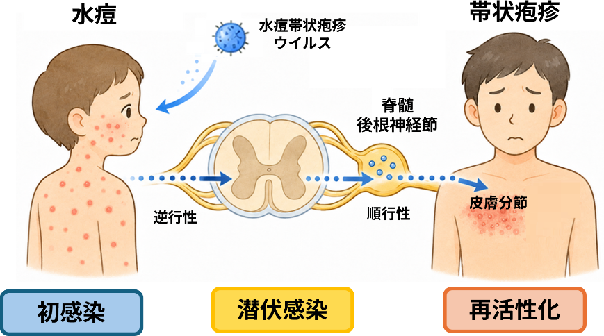
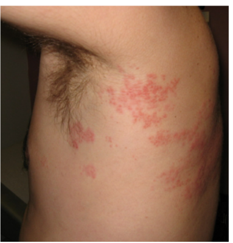
限局性帯状疱疹の皮疹
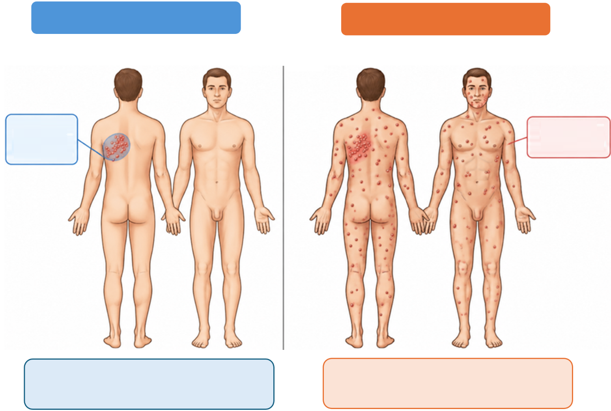
播種性帯状疱疹
限局性帯状疱疹
左胸部の
皮膚分節領域
(例:第5胸神経）
全身の複数部位に
多数の皮疹が出現
・皮疹が体の複数部位に広範囲に出現する
・複数の皮膚分節（3分節以上）に出現する
・免疫不全などを背景にみられることが多い
・皮疹は左右どちらか１つの皮膚分節に限局
・体の片側に帯状に分布する
・通常、痛みや違和感を伴う

初期 (1~5日)
・小さい紅斑が帯状に出現する
・隆起は小さく、深さは浅い
掻痒やピリピリした痛みを伴うことがある
中期 (5~7日)
・発疹が拡大し、水疱が多くなる
・水疱の周囲は発赤、腫脹がみられる
疼痛が強くなることが多い
後期 (7~10日)
・水疱が破綻して、痂疲を形成する
・痂疲は乾燥し、徐々にはがれ落ちる
治るまでに痛みが続くことがある
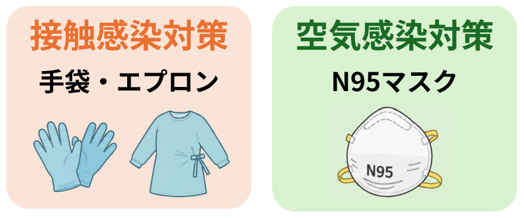
2. 感染対策
55
3. 消毒・衛生管理
患者配置 | 原則として個室隔離、扉は常に閉じる |
表示 | 感染対策予防中の掲示 (空気・接触) |
個人防護具 | N95マスク・手袋・エプロン |
患者使用器具 | 血圧計・体温計・聴診器は患者専用とする 使用後は環境用清拭クロスで清拭 |
患者移送 | 移送時には患者にサージカルマスクを着用する |
保清 | 清拭にて対応（手袋とエプロンを着用する） |
リネン | 患者に使用したもの、血液など体液が付着したものは 白いビニール袋にいれて提出する リネン扱い時は手袋とエプロンを着用する |
廃棄物 | 患者の診察やケアに使用した防護用具（手袋・エプロンなど）は感染性廃棄物として廃棄する |
清掃 | 高頻度接触面は１日１回清拭消毒を行う 専用の清掃用具を用いて、最後に清掃する 退院時は特別清掃を依頼する |
スタッフの配置 | 免疫のないもの・妊娠中のスタッフは担当から外す |
面会者の対応 | 感染性のある期間内は原則禁止とする （対応が必要な場合には感染制御部にご相談ください） |
■感染対策のまとめ
水痘 | 播種性帯状疱疹 | 限局性帯状疱疹 | |
接触感染対策 | 必要 | 必要 | 必要 (水疱の被覆が必要) |
空気感染対策 | 必要 | 必要 | 不要 |
感染性期間 | 皮疹出現2日前から | 皮疹の出現から | 皮疹の出現から |
隔離解除基準 | 全ての皮疹の痂疲化 | 全ての皮疹の痂疲化 | 全ての皮疹の痂疲化 |
備考 | 播種性への進展に注意 |
4. 接触者スクリーニング
- 第一スクリーニング：接触の程度と接触者の免疫状態でランク分けを行う
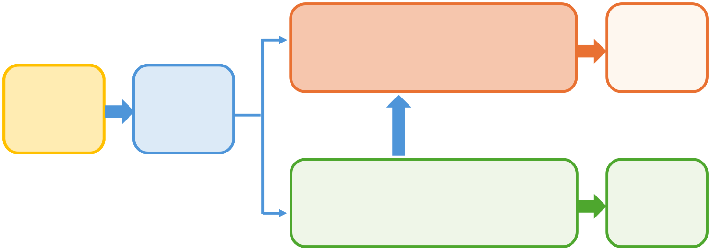
ランクA (濃厚接触)
②へ進む
同室患者* または
発症患者の対応に当たった医療従事者
発症患者に
接触した者
ハイリスク条件：
免疫不全者 (下表参照)妊婦・新生児
ランク分け
(下表 参照)
健康観察
ランクB (中程度接触)
同一フロアに入院中の患者 または
その病棟で勤務した医療従事者
入院中 | ||
ランク | 周辺患者 | 医療従事者 |
ランクA（濃厚接触） | 発症患者の同室患者 | 発症患者の対応に当たった医療従事者 |
ランクB（中程度接触） | 発症患者の同一フロアに入院中の患者 | 発症患者の病棟で勤務した医療従事者 |
* ICUなどのオープンフロアは、フロア全体を同室扱いとする
外来 | ||
ランク | 周辺患者 | 医療従事者 |
ランクA（濃厚接触） | 規定なし | 発症患者の対応に当たった医療従事者 |
ランクB（中程度接触） | 規定なし | 規定なし |
- 第二スクリーニング：接触者の水痘に対する免疫状態を評価する
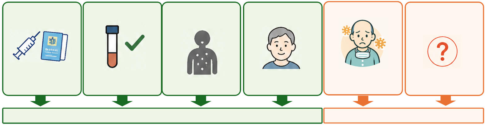
a.水痘ワクチン
2回接種済み
b.水痘IgG陽性
c.水痘・帯状疱疹の確実な罹患歴ワクチン
2回接種済み
d.免疫不全のない
50歳以上
e.免疫不全者 (下表参照)
f.水痘・帯状疱疹
ウイルスに対する
免疫状態が不明
母子手帳などで
確認
EIA法で4以上
Tzank試験陽性など
抗体保有率が
ほぼ100%であるため
感染および重症化リスクが高いため
水痘ワクチン2回以上の接種歴なし かつ
抗体価不明 or 陰性
抗体検査実施
追加対応不要
免疫不全者の定義 (帯状疱疹患者の感染管理における) (Tunbridge, et al.2008より改変) |
１．重度の原発性免疫不全症 ２．化学療法・放射線療法を受け、治療終了後6か月以内 ３．CAR-T療法を受け、治療終了後1年以内 ４．固形臓器移植後で免疫抑制療法中 ５．骨髄移植後で免疫抑制剤終了1年以内またはGVHD発症後 ６．プレドニゾロン換算 20mg/日以上を2週間以上を使用し、治療終了後3ヵ月以内 ７．免疫抑制剤または生物学的製剤使用中 ８．HIV感染者でCD4陽性細胞が200/μl未満 |
5．発症予防
免疫不全者・抗体検査で陰性の者は、接触時期・免疫状態より発症予防を行う。
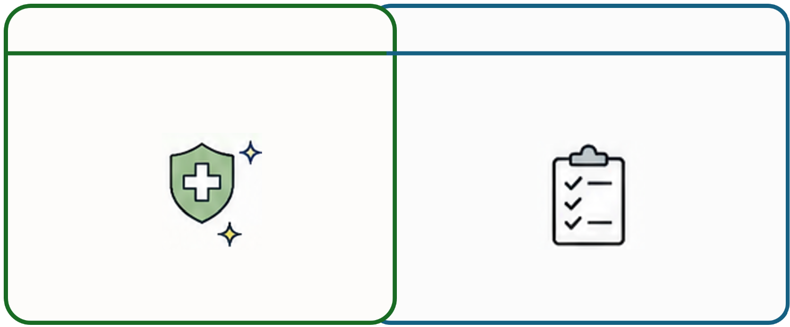
接触後7日目から
接触後72時間以内
ワクチン禁忌例など
免疫不全ではない場合
バラシクロビル内服
水痘ワクチン接種
4週間以内に生ワクチンの接種が
ないことを確認
内服は合計7日間
＊接触日は0日とする
＊接触10日目以内では水痘帯状疱疹免疫グロブリン(VZIG)の有効と報告されているが、日本では入手できない。代用の免疫グロブリンについてはエビデンスが十分ではなく、使用症例は検討を要する。
■抗ウイルス薬予防内服
薬剤名 | 1回量 | 日数 | ||
小児 | バラシクロビル | 20mg/kg/回* | 1日3回 | 7日間 |
アシクロビル | 20mg/kg/回* | 1日4回 | ||
成人 | バラシクロビル | 1g/回 | 1日3回 | |
アシクロビル | 800mg/回 | 1日5回 | ||
＊最大量は成人量とする | ||||
6．接触者の管理
水痘・帯状疱疹ウイルスに免疫のない入院患者（表の「免疫不全者」「上記以外」）については、院内曝露リスクを考慮し、可能な限り退院を検討する。
| 患者 | 医療従事者 | 対応期間 |
１．水痘ワクチン2回以上接種済み ２．水痘抗体陽性 ３．水痘・帯状疱疹の確実な罹患歴 ４．50歳以上 | 健康観察 | 健康観察 | 接触から 8～21日目まで |
免疫不全者 | 健康観察 (発症予防) | 就業制限 | |
上記以外 | |||
■接触者対応のまとめ（発症予防・隔離期間）
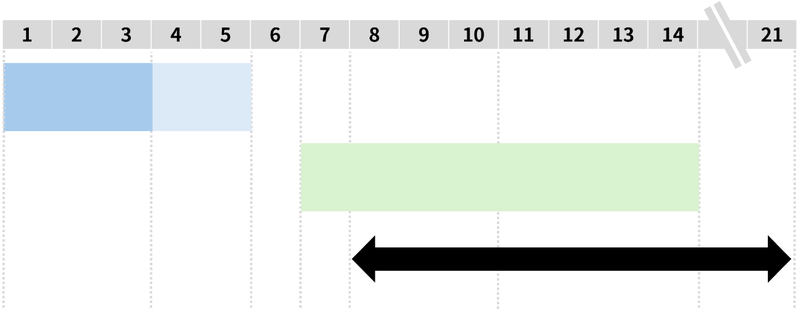
接触からの日数
生ワクチン
緊急接種
許容期間
推奨期間
抗ウイルス薬予防内服
7日間
抗ウイルス薬
予防内服
患者隔離
就業制限
接触8日目～21日目まで
7．参考資料
■播種性帯状疱疹の例（写真）：
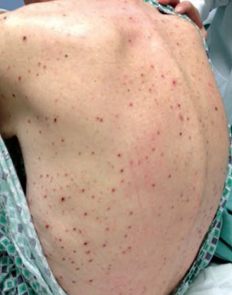
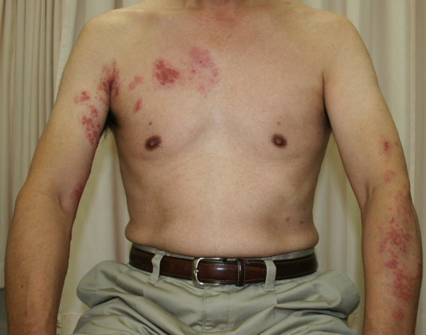
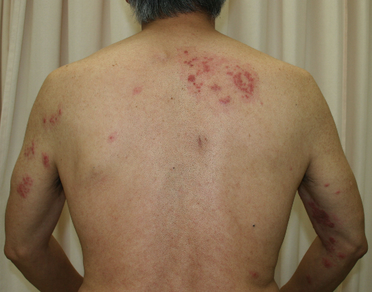
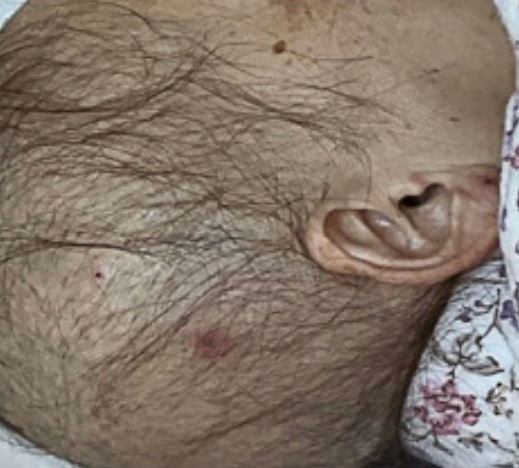
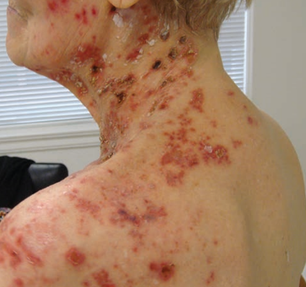
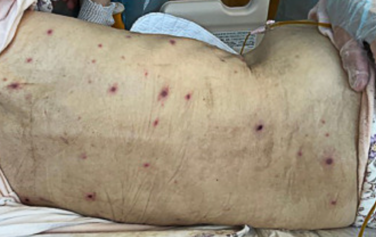
Y Takaoka,et al.Dermatol Online J. 2013 Feb 15;19(2):13.
S Kitaya , et al. Am J Med. 2025 Feb;138(2):e9-e10.
Nadine H,et al.www.consultant360.com.Dec 2016:1133-1134.
D Shum , et al.J Am Osteopath Assoc. 2015 Mar;115(3):175.
■疑い者発生対応フローチャート：
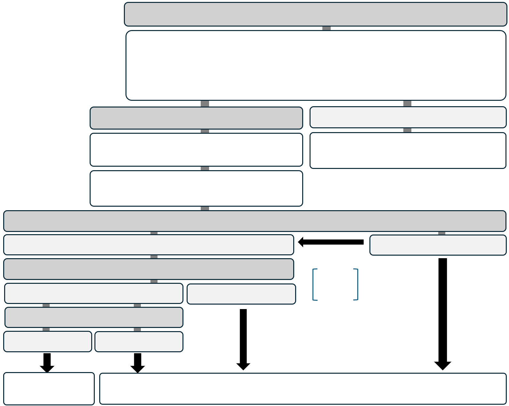
水痘・播種性帯状疱疹疑い患者発生時の対応
・疑い者を皮膚科または感染制御部外来を受診させる
( 播種性帯状疱疹が疑われる場合には皮膚科往診を相談する)
・入院患者は空気感染＋接触感染対策を行う
・可能であれば個室隔離を検討する
水痘・播種性帯状疱疹の診断
いずれも否定的
責任者
感染制御部に連絡する
限局性帯状疱疹の場合
→被覆可能なら標準予防策とする
接触者スクリーニングの実施
感染制御部
接触者スクリーニングの実施
第一スクリーニング
ハイリスク条件＊
クラスB
クラスA
免疫不全
妊婦
新生児
第二スクリーニング
左記以外
VZV免疫なし・免疫不全者
抗体検査
陰性
陽性
健康観察
（接触後8～21日目まで）
発症予防
■シングリックス®（帯状疱疹ワクチン）の扱いについて
シングリックス®（帯状疱疹ワクチン）は、水痘・帯状疱疹ウイルス（VZV）既感染者における帯状疱疹の発症予防を目的とした不活化ワクチンですが、水痘に対する暴露後予防としての有効性は確立されていません。本ワクチンは強力な細胞性免疫を誘導しますが、本来2回接種で完成するものであり、十分な免疫獲得までには数週間以上かかります。このため、現時点では暴露後予防での使用は推奨されていません。
また、シングリックス®は水痘既往の有無にかかわらず接種は可能ですが、水痘未感染者における水痘予防効果は十分に検証されていないため、CDCは水痘免疫の獲得の証明とみなすことはできない、と記載しています。
シングリックス®（帯状疱疹ワクチン）の扱い | |
水痘・帯状疱疹ウイルスに対する 免疫獲得の証明 | 暴露後発症予防 としての使用 |
使用しない （水痘ワクチンの1回分ともしない） | 使用しない （有効性が確立されていないため） |